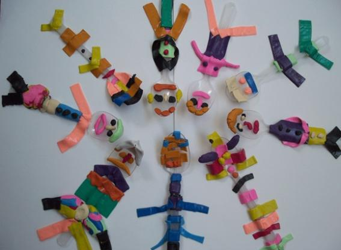
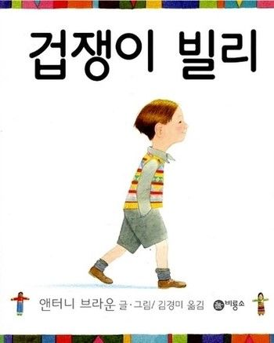

1. 초등 1학년의 정서적 특성
1) 감정 표현이 다양하게 발달한다
초등1학년 시기의 아이들은 행복, 슬픔, 분노, 두려움과 같은 기본적인 감정을 넘어서, 자신의 감정을 더 세밀하게 인식하고 표현할 수 있다. 그러나 아이들은 여전히 감정을 적절하게 관리하고 표현하는 방법을 배우는 과정에 있기 때문에 감정을 제대로 구분하지 못한다.
2) 감정의 강도와 변화가 크다
초등학교에 입학하는 1학년 아이에게 감정적 도전이 크게 나타날 수 있다. 새로운 교육기관의 환경, 학교생활 규칙으로 인해 아이는 갈등과 불안정해지고 감정의 변화가 더 자주 발생할 수 있다.
3) 자아 인식이 발달하는 시기이다
아이는 자신의 강점, 약점, 선호도를 차차 인식하기 시작한다. 이러한 자아 인식의 발달은 학습과 또래관계 등 사회생활의 상호작용 영향을 미치므로 자신감의 증가 또는 자신감의 감소로 이어질 수 있다.
4) 초보적인 자아개념 형성한다
학교생활에서 아이들은 보상을 받거나 단순 비교하는 활동 및 경험이 다양하다. 아이들은 자신의 발달 정도를 파악하는 계기가 되면서 잘할 수 있는 것과 잘 안되는 점을 발견하면서 자아존중감이 발달한다.
3) 상상력과 호기심이 증가한다
기억력도 좋아지고 새로운 것에 대한 호기심도 왕성할 때이다. 책이나 주변 자연 현상 및 사회 현상 등에도 관심이 높아진다. 또 자아감이 형성되도록 이끌어 주면 적극적으로 대응하기도 한다.
4) 집중력이 짧고 산만하다
초등학교 1학년 시기는 유아단계의 연속선에 있으므로 다양한 활동들을 리듬 있게 배치해야 한다. 교사의 말이나 행동, 칠판 그림, 작은 풀꽃이나 빗방울 등 개념이나 논리로 설명하기보다는 여러 가지 체험을 할수록 아이들은 학교적응에 의지도 높게 갖는다.

2. 초등 1학년의 사회적 교류 현상
1) 또래 관계의 중요성을 이해한다
초등학교라는 공적 생활은 또래와의 교류를 중심으로 이루어진다. 아이는 친구를 사귀고, 또래 집단에 속하고자 하는 욕구가 강해진다. 또래의 수용은 아이의 자아존중감과 정체성 형성에 중요한 역할을 한다.
2) 사회적 규범과 역할 학습하게 된다
아이는 규칙적인 학교생활을 통해 사회적 규범, 자신의 역할, 그리고 관계 및 학습의욕에 기대를 가진다. 이는 공동체 생활에서의 협동, 경쟁, 권위에 대한 존중을 경험하며, 사회적 기술과 정서적 발달을 증가시킨다. 특히, 협동 활동은 아이가 협력의 가치를 배우게 하고, 경쟁 활동은 자기 주도성과 성취 욕구를 자극할 수 있다.
3) 사회적 문제 해결 능력이 향상된다
아이는 또래와의 상호작용에서 발생하는 갈등이나 문제를 해결하는 방법을 이해한다. 이 과정에서 아이는 협상, 타협, 그리고 갈등 방법을 조율하고, 해결할 수 있는 기술을 학습하고 발휘하게 된다.

3. 초등 1학년을 위한 지원 전략
1) 정서적 지원 제공
아이가 자신의 긍정적, 부정적 감정을 이해하고 적절하게 말과 행동으로 표현할 수 있도록 지원한다. 이는 초등 1학년 시기에 아이가 자신의 감정을 또래들과 건강한 방식으로 경험하는 기회가 많을수록 상황에 적절하게 대응하면서 성장하게 될 것이다.
2) 사회적 기술 교육
아이가 또래와 효과적으로 상호작용하고, 협력하며, 갈등을 해결할 수 있도록 사회적 기술을 가르쳐야 학교생활에 필요한 자아가 발달한다. 이러한 사회적 기술을 위하여 가정에서 아이의 발달과 성격에 알맞은 부모역할이 필요하다.
3) 긍정적인 또래 관계 촉진
아이가 또래와 긍정적인 관계를 형성하고 유지할 수 있도록 한다. 이는 아이가 학교생활에서 사회적으로 통합되고, 소속감을 느끼게 된다. 또한, 신체적, 정서적, 사회적, 학습적 자아존중감을 자연스럽게 발달시키는 데 도움이 된다.
4) 개인차 존중
아이 각자의 개성과 필요를 이해하고 존중하며, 이에 맞춘 개별적인 지원을 제공해야 한다. 초등1학년 시기 아이들의 정서적 및 사회적 발달을 지원하는 것은 학교생활 초기의 사회적 상호작용에서 긍정적인 경험을 하면서 나와 너의 차이를 파악하고 자신감을 향상시켜 갈 것이다.
2024.02.22 - [상담] - 초등1학년 - 아이의 마음과 행동은 우주인, 반은 인간
초등1학년 - 아이의 마음과 행동은 우주인, 반은 인간
초등학교 1학년 새로운 환경에서 만나는 새로운 친구, 교사, 공부방법 등에서 나타나는 아이들의 신체적, 인지적, 사회・정서적 아이들의 특성은 다음과 같다. 1. 신체적 발달 1) 신체적으로 발가
think-sis.co.kr
2024.03.10 - [상담] - 초등 1학년 - 학교 적응, 또래 관계 어려워요
초등 1학년 - 학교 적응, 또래 관계 어려워요
초등학교 1학년 학생들의 학교 적응 문제와 또래 관계는 아이 발달 및 교육 과정에서 중요한 이슈이다. 이 시기 아이들은 유아교육기관이나 가정에서의 생활로부터 학교라는 새로운 환경으로의
think-sis.co.kr